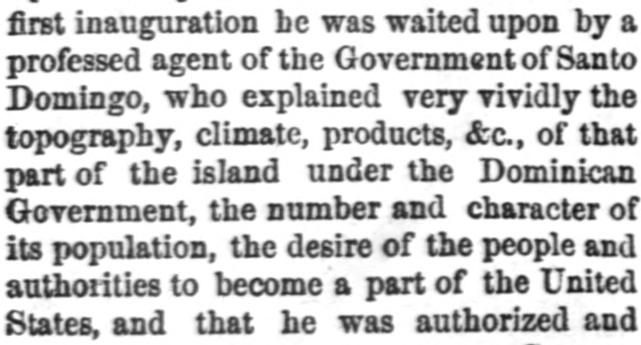
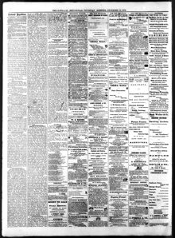

See the full pageVer la página completaProfessed agent of the Government of Santo Domingo, who explained veryAgente profeso del Gobierno de Santo Domingo, quien explicó muy
A professed agent of the Government of Santo Domingo made overtures to the President regarding the annexation of the island to the United States, though the President initially suspected the agents might be adventurers. To ascertain the real feelings of the people, the President dispatched a confidential agent who found an enthusiastic desire for annexation, leading to a treaty that was subsequently submitted to the Senate for ratification.Un supuesto agente del Gobierno de Santo Domingo presentó proposiciones al presidente respecto a la anexión de la isla a los Estados Unidos, si bien el presidente sospechó inicialmente de que los agentes pudieran ser aventureros. Con el fin de constatar el auténtico sentir de la población, el presidente despachó a un enviado confidencial, quien constató un ferviente deseo de anexión, lo que dio origen a un tratado sometido posteriormente al Senado para su ratificación.
FULL TEXT:TRADUCCIÓN:
THE SANTO DOMINGO QUESTION.LA CUESTIÓN DE SANTO DOMINGO.
After a lapse of six years since the President submitted to the Senate a treaty for the annexation of Santo Domingo to the United States, we venture to refer again to the subject for the purpose of reaching other matters. In justification of the President, however, it might be stated that the question of acquiring insular possession never occurred to him until the matter was forced upon him by circumstances. Soon after his first inauguration he was waited upon by a professed agent of the Government of Santo Domingo, who explained very vividly the topography, climate, products, &c., of that part of the island under the Dominican Government, the number and character of its population, the desire of the people and authorities to become a part of the United States, and that he was authorized and directed to make overtures to our Government for the purpose of bringing about annexation. The President listened to all that was said without venturing a remark that could in any way be interpreted as an indication favorable to the proposition. In fact, his whole judgment at the time was against the proposition. But later a second agent appeared, making substantially the same statements as the first, and was listened to and treated in a like manner. The President seemed to feel no assurance that these parties were not adventurers, anxious to make something for themselves out of the transfer. In view, however, of the close proximity of the island to our shores and of the oft-repeated Monroe doctrine on our part, he believed it his duty to ascertain the real feelings of the people and Government of Santo Domingo in relation to the question of annexation. For this purpose he dispatched a confidential agent who visited nearly every portion of the island, held free intercourse with both officials and non-officials, and found that it was the enthusiastic desire of all to become a part of “the Great Republic.” Under these circumstances a treaty was entered into and submitted to the Senate for ratification. That it would excite the animosity and harsh, unjust and untruthful criticism which itDespués de un lapso de seis años desde que el Presidente sometió al Senado un tratado para la anexión de Santo Domingo a los Estados Unidos, nos aventuramos a referirnos de nuevo al tema con el propósito de llegar a otros asuntos. En justificación del Presidente, sin embargo, podría afirmarse que la cuestión de adquirir posesión insular nunca se le ocurrió hasta que el asunto le fue forzado por las circunstancias. Poco después de su primera inauguración fue visitado por un pretendido agente del Gobierno de Santo Domingo, quien explicó muy vívidamente la topografía, el clima, los productos, etc., de esa parte de la isla bajo el Gobierno dominicano, el número y carácter de su población, el deseo del pueblo y las autoridades de convertirse en parte de los Estados Unidos, y que estaba autorizado y dirigido a hacer propuestas a nuestro Gobierno con el propósito de lograr la anexión. El Presidente escuchó todo lo que se dijo sin aventurar una observación que pudiera de modo alguno ser interpretada como una indicación favorable a la proposición. De hecho, su juicio entero en ese momento era contra la proposición. Pero después apareció un segundo agente, haciendo sustancialmente las mismas declaraciones que el primero, y fue escuchado y tratado de manera similar. El Presidente parecía no sentir seguridad alguna de que estas partes no fueran aventureros, ansiosos de hacer algo para sí mismos de la transferencia. En vista, sin embargo, de la cercana proximidad de la isla a nuestras costas y de la a menudo repetida doctrina Monroe por nuestra parte, creyó que era su deber averiguar los sentimientos reales del pueblo y el Gobierno de Santo Domingo en relación con la cuestión de la anexión. Con este propósito despachó un agente confidencial que visitó casi cada porción de la isla, mantuvo libre comunicación tanto con funcionarios como con no funcionarios, y encontró que era el deseo entusiasta de todos convertirse en parte de «la Gran República». Bajo estas circunstancias se entró en un tratado y se sometió al Senado para su ratificación. Que excitaría la animosidad y la crítica dura, injusta y falsa que
National Republican. Washington City (D.C.), December 16, 1875. Page 2.